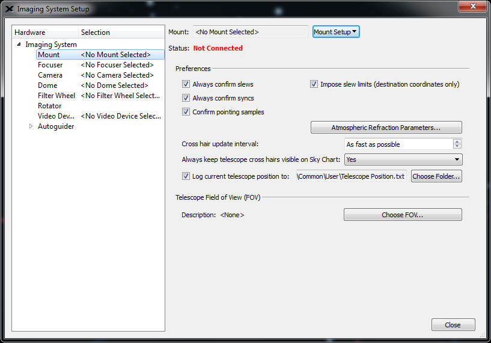
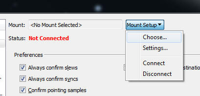
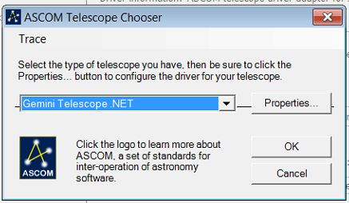

- Before opening up TheSkyX, make sure that the Gemini.net driver is not running. When you open up TheSkyX it should look
similar to below.
|
 |
- In the upper menu bar click on the Telescope Selection. You should see the below pull down show up.
You can click on the image to see a larger image if necessary.
|
 |
- Click Telescope Setup. The below menu should open. Now several users have said that theSkyX
will not open the Gemini.net driver for them, so they have to have
the Gemini.net driver up and running. Also both programs have to be
either running in non-administrator mode or administrator
mode. We recomment that you do not run in adminstrator mode.
(Do this only in if you have to: If you right click on both program's icons and select
run as administrator, then hopefully that will fix them not seeing
each other. But if you do this, then any other program you
need to use the ASCOM Gemini-net driver with will have to be opened
the same way. So if you are not seeing the ASCOM selection,
the close theSkyX, and open both theSkyX and Gemini.net in Admin
mode and start over at step 2, but leave the Gemini.net running )
|

|
- Click Mount Setup. The below popup menu should open.
|

|
- Click the Choose selection. The below popup menu should open.
|
- Notice that the ASCOM selection might not be showing the
ASCOM Mount as a sub
item as in the above picture. If it is not showing any selections, then Click on the ASCOM arrow to the left of ASCOM. The
sub items should open. If ASCOM Mount is there, then select it and
click OK.
|

|
- Click Mount Setup. The below popup menu should open.
Click on Settings...
|
 |
|
|
- You should
then see the ASCOM Telescope Chooser come up.
|
|
 |
- Click the Down arrow to the left of
Properties. A selection similar to the one below should appear.
|

|
- Select the Gemini Telescope.NET selection and then click OK
.
You now have several ways to tell TheSkyX to connect to the Gemini-2 mount.
|
 |
- You can select the mount Setup button, then click Connect.
|
 |
- Or you can use the Telescope menu pulldown and selec connect.
Now if this is the first time doing this, you might get an
error message "command Failed. Error 206. Close.
This happens alot.
Just close TheSkyX, and make sure the ASCOM Gemini.net driver is also closed.
|
- Just Close theSkyX and then reopen it. Select either one of the above connect
methods.
If every thing goes OK you should see an Gemini Logo
in the bottom taskbar. See below.
This will happen if the Gemini-2 is waiting on the selection of a startup mode. If a starup
mode has already been selected, then skip to step 17.
|
 |
- Double click on the Gemini Logo. If the Gemini is waiting for a startup mode selection, the following menu should appear.
|
 |
- Chose your desired startup selection, and then hit Start Now. The Gemini-2 icon in the task bar will
disappear.
|
- You should see a popup saying the the Gemini.net is now connected.
You should also then see a target on the screen of theSKYX. You are on you way.
|
- A side note about opening theSkyX (or for that matter any program) when using the gemini.net driver that has to communicate
with the Gemini.net driver. You can start programs in
normal mode or administrator mode. You always must start all programs that is going to use the ASCOM Gemini.net driver in the same mode.
I.E If you start Gemini.net in administrator mode, then you will
have to run theSkyX in administrator mode. If you start
Gemini.net in normal mode, then you will have to run theSkyX in
normal mode. If you do not, they will not
be able to communicate with each other.
|